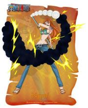

娜美
“小贼猫”娜美
年龄：18岁→20岁
生日：7月3日
血型：X型
身份：阿龙海贼团测量员→草帽一伙航海士
故乡：东海▪可可亚西村
特征：左臂有风车和橘子样的纹身（纪念阿健和养母贝尔梅尔），
左手手腕戴着一个手镯（姐姐诺琪高在娜美出海前送给她的）。
身高：169cm→170cm
三围：B95▪W55▪H85
喜欢的食物：都不错，但最喜欢橘子
爱好：钱，橘子
特长：绘制地图，观测天气，偷东西
梦想：绘制出自己的世界地图、绘制全世界的航海图。
武器：三截式长棍→天候棒→完全版天候棒→魔法天候棒
悬赏：1600万（司法岛事件）→6600万（德雷斯罗萨篇）
拥有橘色的短发（两年后为波浪长发）和左肩的刺青（风车与橘子的图案）。
使用棍术，现在武器为“魔法天候棒”。头脑聪明又机灵，精通气象学和航海术，
擅长偷术，能用身体感知天气，完美指示航路，
是个能精确画出航海图的天才航海士。本质上是个细心、善良、
重视感情、嫉恶如仇、偶尔有些温柔能干的女性。最喜欢钱和橘子，
梦想是要画出全世界的地图
